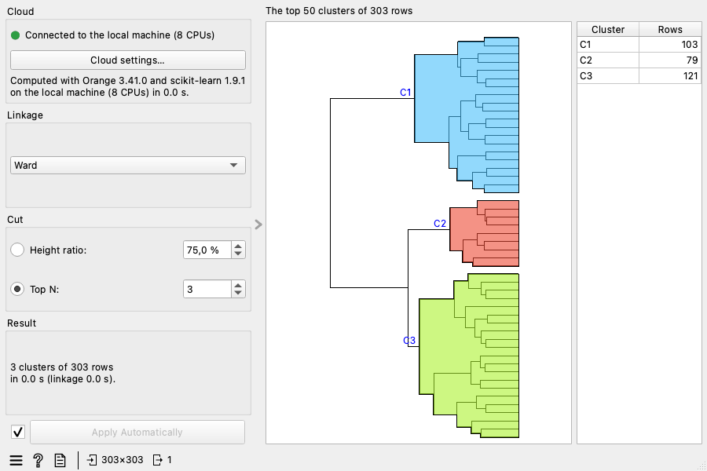

Hierarchical clustering of the distances that Cloud Distances keeps on the machine, cut into clusters by their number or by height.

Like every Cloud widget, it has a Cloud box at the top: whether a machine is connected, Cloud settings… and Stop machine, and what the last job ran with, how long it took and what it cost. See Cloud widgets.
The widget draws the top of the dendrogram (its top 50 clusters, or the cut's clusters, up to 200) and lists the clusters' sizes. The clusters are numbered C1, C2, … in the dendrogram's order, as in Orange. Selecting clusters by hand in the dendrogram isn't possible. Changing only the cut is quick: the machine keeps the linkage.
The linkage needs about 1.1 times half the matrix in memory besides the matrix (less for single linkage), and SciPy computes it on one core: for 50,000 rows about 3 minutes.